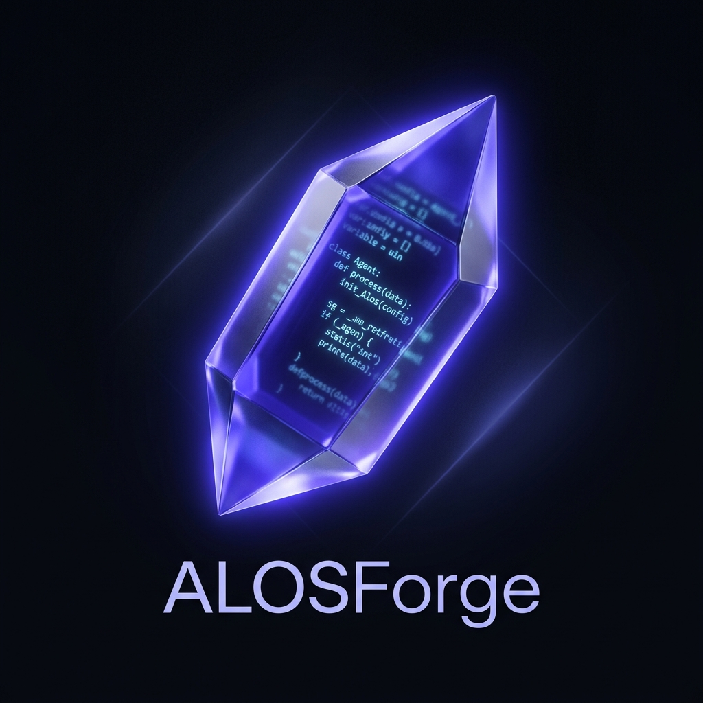

The Future is Autonomous.
ALOS is the world's first local-first agentic operating system. A cooperation surface where humans and agents build together.

ALOS is the world's first local-first agentic operating system. A cooperation surface where humans and agents build together.
ALOS is not a chat app with tool-use. It is a literal Operating System for agentic intelligence. It creates an environment where multiple specialized modules cooperate, orchestrated by agents, operating directly on your machine with your data.
Local-First
Advanced IDE Support

A real IDE environment with Monaco, xterm, and VS Code-style chrome. Agents operate alongside you in a shared editor.

A DAG-based workflow orchestrator. Define triggers, schedules, and human-in-the-loop gates for complex automations.

A SQLite-backed code intelligence graph. Agents consult symbol context and impact analysis before touching a line.
Open a file in Forge, ask an agent to refactor it — the agent consults Atlas to understand the blast radius, then runs the change through a Current workflow for linting and testing.